HOLA SOY
VÍCTOR HUGO HUALLPA H.
Desarrollador Web Full Stack & Creador de Juegos con Visión de Ingeniería
"Estudiante de Ingeniería de Software y sistemas en la UNJ y egresado de una carrera técnica en Software de SENATI. Me dedico a dar vida a aplicaciones web robustas y funcionales, además de desarrollar la lógica de juegos inmersivos. Mi código combina la arquitectura de software con la creatividad. Mira mis proyectos (Web y Juegos) para ver el potencial que aporto a cada desafío. Listo para mi primer proyecto real."
Proyectos Destacados de Desarrollo Web y Creación de Videojuegos
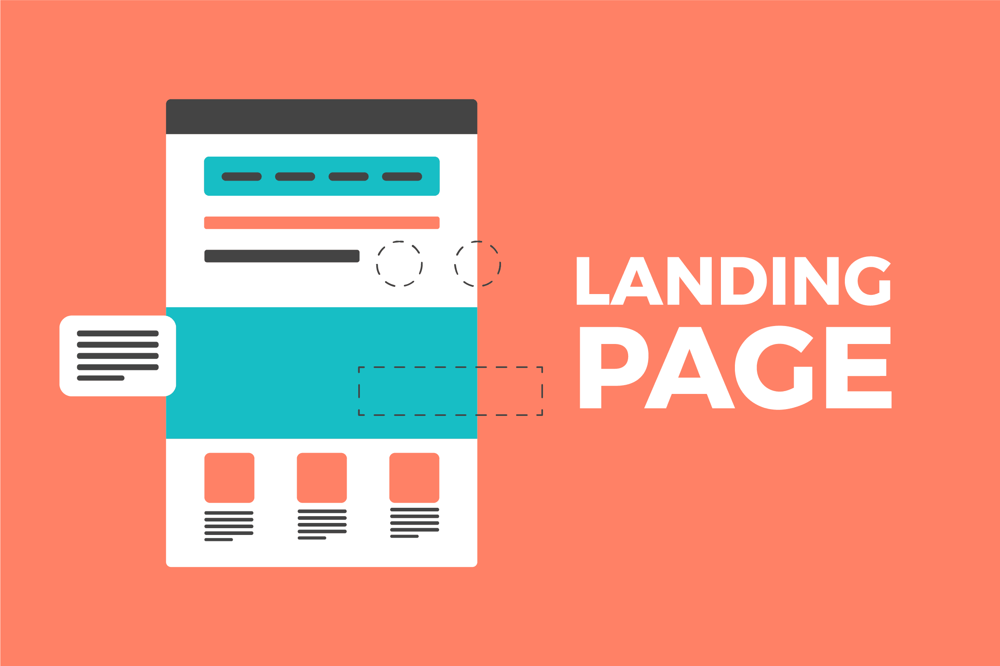
Landing Page de Portafolio (HTML/CSS/JS Puro)
Mi carta de presentación en línea. Un proyecto desarrollado desde cero utilizando HTML, CSS y JavaScript "puro". Fue clave para dominar la estructura, el estilo y la interactividad básica de la web, garantizando el control total sobre cada línea de código.
Ver Proyecto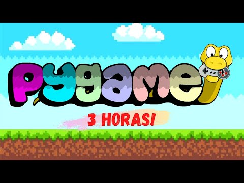
Sistema de Gestión de Tareas (Laravel y MySQL)
Proyecto **Full Stack** enfocado en la administración de tareas y usuarios. Desarrollado con el *framework* **Laravel** (PHP) para el Backend y **MySQL** como base de datos, aplicando el patrón MVC para una arquitectura escalable.
Ver Proyecto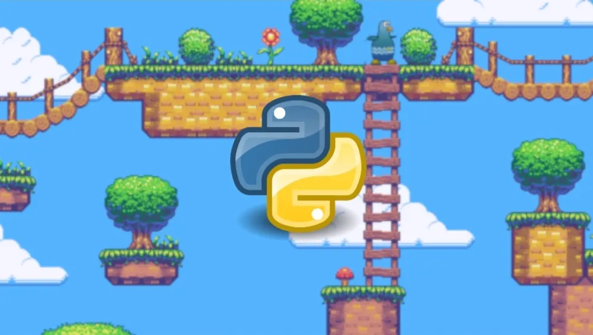
Prototipo de Juego 2D (Python y Pygame)
Exploración de la **lógica de juegos** y físicas básicas. Desarrollado en **Python** utilizando la librería **Pygame**. Demuestra mi capacidad para aplicar algoritmos complejos en entornos no web.
Ver CódigoSobre Mí: Ingeniero de Software en Formación
Mi trayectoria: "Soy Víctor Hugo Huallpa Huahuacondori (VECH), un desarrollador impulsado por la idea de construir y dar vida a productos digitales. Desde el principio, mi objetivo ha sido crear código que no solo funcione, sino que ofrezca una experiencia de usuario memorable. Mi pasión se divide en dos mundos: la arquitectura web robusta y la lógica inmersiva de los videojuegos."
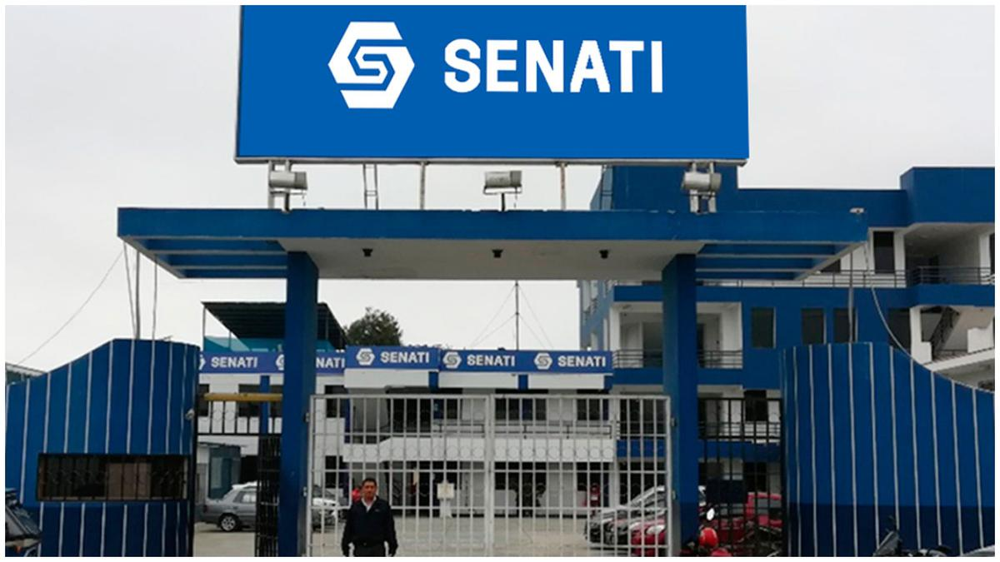
Formación Técnica (SENATI)
"Completé mi carrera técnica en **Ingeniería de Software**, una etapa que me proporcionó una base sólida en la planificación, **diseño de sistemas** y buenas prácticas de codificación. Esto me permite abordar cualquier proyecto con visión a largo plazo."
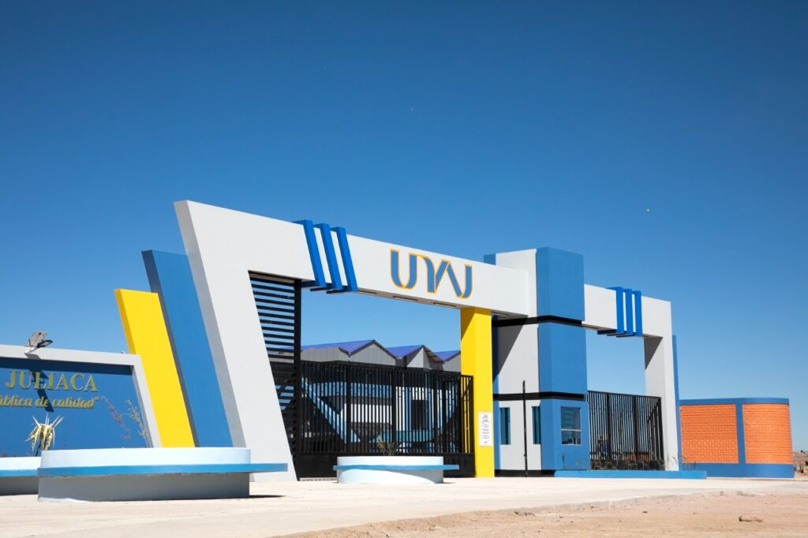
Formación Actual (UNAJ)
"Actualmente, estoy potenciando y profundizando mis conocimientos como estudiante en la Universidad Nacional de Juliaca (UNAJ), una etapa que complementa mi experiencia técnica con un **enfoque ingenieril más amplio** y teórico."
"Busco aplicar esta versatilidad para crear soluciones completas: puedo construir el **sitio web de un juego**, la herramienta de administración (dashboard) y la lógica interna del juego."
Habilidades
Mi kit de herramientas (Hard Skills)
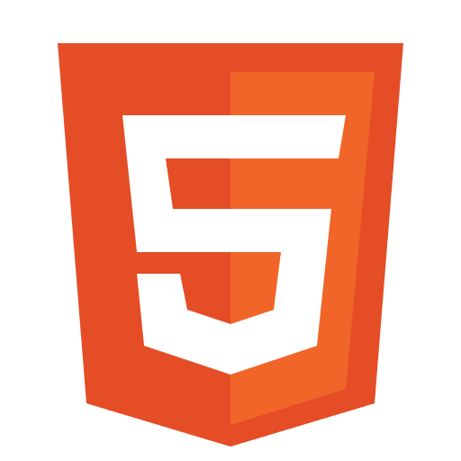
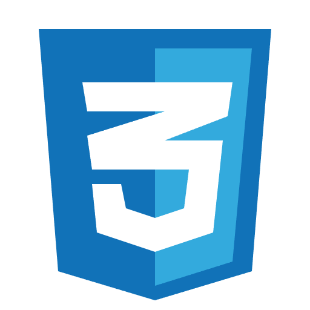
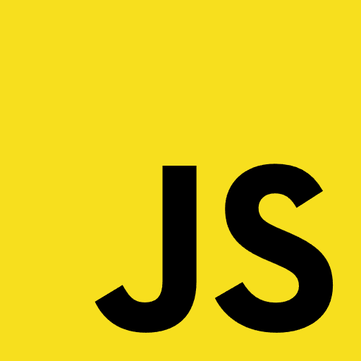

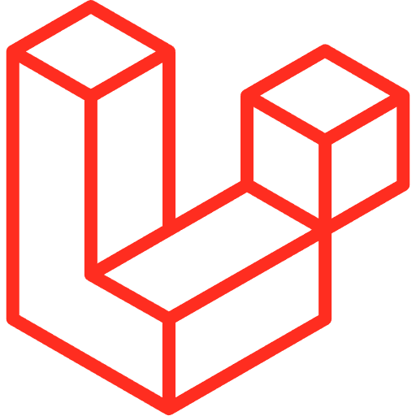


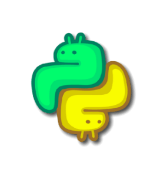
Habilidades Blandas (Soft Skills)
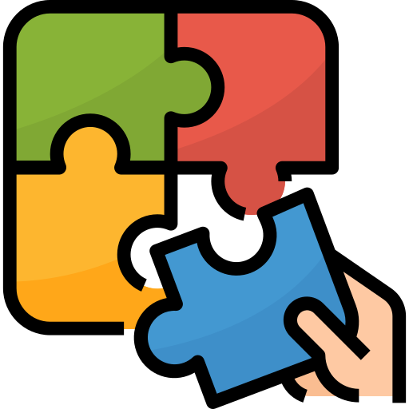
Resolucion de problemas
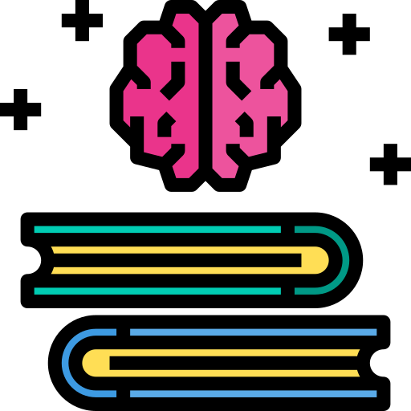
Aprendizaje Continuo

Trabajo Autodirigido

Comunicacion Efectiva
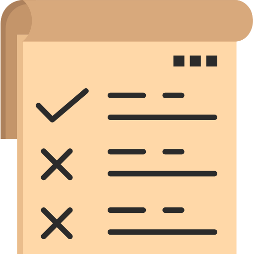
organizacion
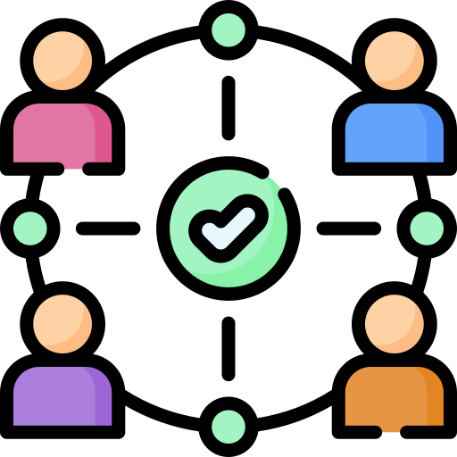
Trabajo en equipo
ingles